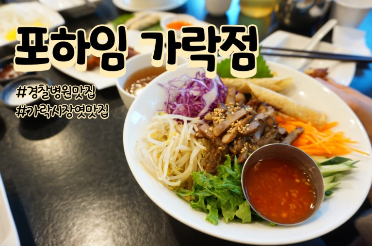

포하임 가락점
경찰병원맛집 가락시장역맛집 최고의 분식집

비빔 쌀국수 최고!
포하임 가락점은 가락시장역이랑도 가깝고 경찰병원역이랑도 가까워요.가락시장역 4번 출구 & 경찰병원역 1번출구로 나오시면 5분이내로 도착 가능!
주말 저녁 6시쯤에 도착했는데 아직은 일러서 그런지 손님은 별로 없었어요.
저희까지 3팀이있었던 것 같아요.
그러다가 한팀 두팀 들어오더니 주변 좌석이 다찼다는!
양지 쌀국수 9000원, 숯불 돼지고기와 에그롤, 버머셀리 비빔 쌀국수 11500원
에그롤 4000원, 칠리윙 55000원 메인메뉴 2개 사이드메뉴 2개
이렇게 주문했어요. 비빔 쌀국수 처음 봤는데...결론적으로 완전 강추예요!
샐러드 쌀국수? 먹는 느낌이랄까? 샐러드가 만땅!
쌀국수는 직접 양지로 육수를 만든다고 하니 맛있는 거는 확실하지요.
원래는 미지근한 차만 있었는데 뜨거운 차도 마시고 싶어서 요청하니 바로
바로 주시더라구요...... 자세한 내용 확인하기